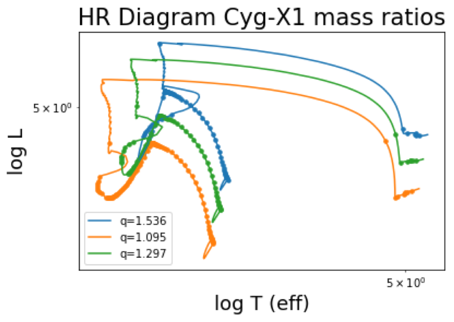
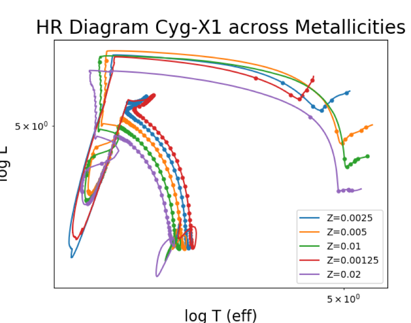

MESA Modules: Modeling Stellar Evolution-
To evolve the HMXB system Cygnus X-1 we use Modules for Experiments in Stellar Astrophysics (MESA). MESA is a one-dimensional hydrodynamic module which evolves a zero age main sequence star (ZAMS) in a binary system.
Below are MESA plots of the evolutionary tracks of Cygnus X-1 on the HR diagram. The plot to the left shows varied mass ratios (q) which are given as the mass of the black hole over the mass of the donor star. The plot to the right shows varied metallicities (Z). Note solar metallicity is Z=0.2.

We adjust initial metallicities and then mass ratios for a range of evolutions and MESA outputs final masses and orbital separation for each evolution.With this information, we aim to determine a merger rate for HMXB systems post supernova.
Supernova Kick Monte Carlo Simulation-
We use a Monte Carlo simulation to model a supernova kick, sampling kick velocity magnitudes from a Maxwellian distribution. Theta, the angle between the orbital velocity relative to the black hole (i.e. the positive y axis) and the kick velocity, is drawn from a sin distribution. While, we draw phi, the angle between Z axis and the kick on the X-Z plane, from a flat distribution.
We input these random draws along with the outputted masses and orbital separations from MESA into equations in Kalogera 1996. We use equation 5.14 derived in Peters 1964 to find resulting inspiral time distributions and to identify systems that merge post supernova. From this we obtain the distributions for the final orbital separation and eccentricities of these systems.